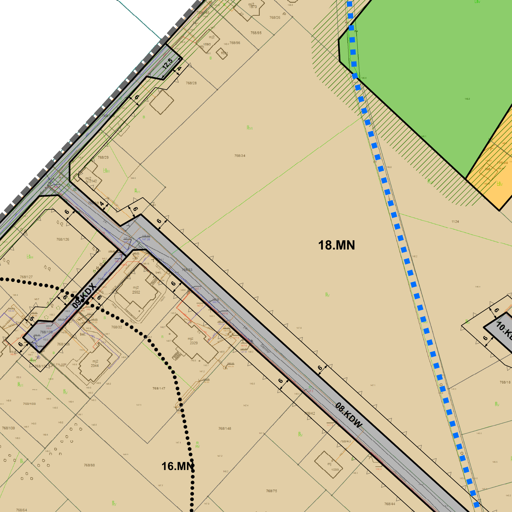

768/136
616 m² według opisu
Parcela od strony ulicy. Boki mają orientacyjnie 20 m oraz 27–31 m, ze ściętym narożnikiem. Działkopedia pokazuje 615 m² — wiążącą powierzchnię należy sprawdzić w EGiB.
CHWASZCZYNO · UL. DAMROKI
Blisko jeziora Wysockiego. Z potencjałem na dom i ogród. Z kilkoma pytaniami, które warto rozstrzygnąć przed zakupem.
ANALIZA Z 15 PAŹDZIERNIKA 2026 · Czas czytania: ok. 8 min
Geometria działek: GUGiK · północ u góry
01 / OCENA OFERTY
Oceniamy obie parcele jako teren pod jeden dom wolnostojący. Kluczowe są możliwość wspólnego zagospodarowania, ustawienie domu, prawny dojazd i koszt przyłączy. Dwa numery ewidencyjne same w sobie nie uzasadniają dopłaty przy takim celu zakupu.
Zobacz kluczowy zapis planu616 m² + 608 m²
490–531 zł/m² · opinia analityczna, nie operat
Wspólne zagospodarowanie, linie zabudowy i ogród.
Oznaczenia pomagają odróżnić dane od założeń.
02 / POŁOŻENIE
768/136 leży od strony Damroki.
768/137 znajduje się za nią,
na północny wschód.
Rozważ dom bliżej ulicy i ogród w głębi
terenu.
Oferta Transakcje 2025–2026
Mapa porównawcza · bez podkładu terenowegoGranice z usługi ULDK GUGiK. Odległości w linii prostej, orientacyjnie od środka działki 768/136. Wybierz oznaczenie na mapie lub przycisk poniżej.
616 m² według opisu
Parcela od strony ulicy. Boki mają orientacyjnie 20 m oraz 27–31 m, ze ściętym narożnikiem. Działkopedia pokazuje 615 m² — wiążącą powierzchnię należy sprawdzić w EGiB.
608 m² według opisu
Parcela położona za pierwszą, o głębokości około 20 m. W scenariuszu jednego domu może zapewnić miejsce na ogród. Układ domu od ulicy i ogrodu z tyłu to pomysł do sprawdzenia przez architekta, nie gotowa koncepcja zabudowy.
03 / MOŻLIWOŚCI ZABUDOWY
Położenie obu działek wskazuje na 18.MN — zabudowę mieszkaniową jednorodzinną.
Uchwała XXII/264/2020 z 26 maja 2020 r. obejmuje rejon Jeziora Wysockiego. Współrzędne obecnych parceli dopasowano do urzędowego rysunku. Podkład ewidencyjny rysunku jest starszy i nie pokazuje osobno obecnych numerów.
To ustalenie mapowe, a nie urzędowy wypis. Dokładny zakres planu dla obu parceli, linie zabudowy i ewentualny pas drogowy wymagają aktualnego wypisu i wyrysu.
Otwórz urzędowy plan PDF ↗
| Parametr | Dom wolnostojący | Zabudowa bliźniacza |
|---|---|---|
| Maks. powierzchnia zabudowy | 25% | 30% |
| Maks. intensywność zabudowy | 0,6 | 0,7 |
| Min. powierzchnia biologicznie czynna | 50% | 50% |
| Maks. wysokość domu | 10 m | 10 m |
| Kondygnacje nadziemne | maks. 2 | maks. 2 |
| Nachylenie głównego dachu | 30–45° | 30–45° |
| Min. powierzchnia nowo wydzielanych działek | 1000 m² | 600 m² |
Łącznie 1224 m² to punkt wyjścia do projektu jednego domu wolnostojącego i ogrodu. Architekt powinien potwierdzić, czy obie parcele można objąć jedną działką budowlaną i jak rozliczać wskaźniki planu. Nie przesądzono potrzeby formalnego połączenia działek. Próg 1000 m² w tabeli dotyczy nowo wydzielanych działek; nie jest sam w sobie potwierdzeniem prawa do zabudowy. §16 przewiduje wyjątki dla mniejszych parceli, m.in. wydzielonych przed wejściem planu w życie.
Jeden budynek mieszkalny na działce budowlanej. Zabudowa wolnostojąca lub bliźniacza; bez szeregowców. Wysokość obiektów pomocniczych wskazanych w planie — do 6 m.
Rysunek pokazuje przy tym odcinku Damroki linię zabudowy 6 m od linii rozgraniczającej drogi. Nie jest to pomiar od krawędzi obecnej jezdni.
Jeżeli całe 1224 m² będzie podstawą rozliczenia wskaźników, 25% daje do 306 m² powierzchni zabudowy, a 50% oznacza co najmniej 612 m² powierzchni biologicznie czynnej. To obliczenie warunkowe, nie dopuszczony obrys domu ani jego powierzchnia użytkowa. Trzeba uwzględnić pozostałe budynki, linie zabudowy i odległości.
Obsługa 18.MN przewidziana jest z 08.KDW, 10.KDX i 13.KDX. Zapis planu nie zastępuje praw do korzystania z drogi. Dla wydzielanych dojazdów wewnętrznych plan wskazuje minimum 8 m szerokości.
Plan obejmuje otulinę Trójmiejskiego Parku Krajobrazowego i strefę 5 km od lotniska. Zadrzewienia oraz ewentualne rowy wymagają uwzględnienia. Obowiązki archeologiczne dotyczą obszaru oznaczonej strefy, nie automatycznie całego 18.MN.
Sprzedający deklaruje wydane warunki zabudowy pod zabudowę jednorodzinną, ale nie udostępnia decyzji. Może to być starsza decyzja albo nieaktualny fragment opisu.
Należy uzyskać całą WZ z załącznikiem, datą i zakresem działek oraz zestawić ją z aktualnym MPZP. Nie jest to samodzielny dowód możliwości realizacji wybranego projektu domu.
Odnaleziony komunikat gminy z 27 sierpnia 2026 r. informował, że plan ogólny nie wszedł jeszcze w życie. Działkopedia w dniu analizy wskazywała przygotowanie dokumentu. Nie potwierdzono nowszego urzędowego rozstrzygnięcia.
Nie należy mylić planu ogólnego z obowiązującym MPZP. Dla tej nieruchomości najpierw trzeba potwierdzić zakres planu miejscowego.
Komunikat gminy ↗04 / RYNEK
Wybrane transakcje z lat 2025–2026.
Bez mieszania ich ze
sprzedażami sprzed dekady.
Źródło: Działkopedia / RCN.
700 000 zł ÷ 1224 m²
Większe parcele w porównaniu: 406–408 zł/m².
Mniejsze parcele i pakiety:
578–707 zł/m².
Stawka oferty leży pomiędzy tymi grupami. Różnice w dojeździe, uzbrojeniu, powierzchni i prawach do zabudowy mogą mieć większe znaczenie niż sama odległość od jeziora.
Stawki w zł/m². Oferta wyróżniona kolorem. Gwiazdką oznaczono prawdopodobne pakiety.
| Działka | Data | Powierzchnia | Cena | zł/m² | Odległość |
|---|---|---|---|---|---|
| 1392 + 1393* ↗ | 02.2025 | 430 + 430 m² | 540 400 zł* | 628 | 420–440 m |
| 1401 + 1402* ↗ | 10.2025 | 432 + 544 m² | 690 400 zł* | 707 | 465–480 m |
| 734/19 ↗ | 05.2026 | 1092 m² | 445 000 zł | 408 | 660 m |
| 771/83 ↗ | 06.2025 | 380 m² | 219 653 zł | 578 | 690 m |
| 771/103 ↗ | 06.2025 | 312 m² | 180 347 zł | 578 | 715 m |
| 733/119 ↗ | 04.2025 | 1194 m² | 485 000 zł | 406 | 855 m |
* Przy dwóch parcelach serwis pokazuje tę samą cenę całkowitą, a stawka odpowiada sumie powierzchni. Wskazuje to na pakiet, lecz wymaga sprawdzenia dokumentu transakcji. Nie policzono tych wpisów jako dwóch sprzedaży po pełnej cenie.
Szersza okolica Chwaszczyna. Oczekiwania sprzedających na dzień analizy; nie ceny zawartych umów.
TWÓJ SCENARIUSZ
Roboczy punkt negocjacyjny: 600–650 tys. zł. Przy jednym domu ważniejsze są większe parcele porównawcze po 406–408 zł/m² niż małe działki po 578–707 zł/m². Te widełki są propozycją negocjacji, nie potwierdzoną wartością ani uzasadnieniem ceny 700 tys. zł.
Sama cena gruntu. Bez kosztów transakcji, przyłączy, przygotowania terenu i budowy.
05 / CO SPRAWDZIĆ W TERENIE I DOKUMENTACH
Wspólne zagospodarowanie obu parceli, linie zabudowy i obrys domu. Sprawdź, ile miejsca pozostanie na ogród, parking i przyłącza.
Sprawdź KW, udziały i służebności na całej trasie od Damroki do drogi publicznej. Układ wjazdu dobierz do jednego domu; osobny dojazd do tylnej parceli nie jest założeniem tej analizy.
Sieć w ulicy to nie gotowe przyłącze. Potwierdź wodę, kanalizację, energię oraz gaz dla jednego domu, wraz z trasą i kosztem przyłączy.
Zdjęcia pokazują zadrzewienia i samosiewy. Nie ustalono kosztu przygotowania terenu, możliwości wycinki ani warunków fundamentowania.
Bliskość wody nie zapewnia prawa dojścia do plaży. Działkopedia sygnalizuje kolej około 634 m od parceli; sprawdź hałas podczas oględzin.
Rozbieżne metraże i deklaracja WZ wymagają wyjaśnienia. Bazuj na EGiB, KW i aktualnym wypisie z planu, nie na nagłówku ogłoszenia.
Działkopedia nie wykazała zagrożenia powodziowego w promieniu 500 m ani osuwisk w SOPO. Nie oznacza to potwierdzonej nośności gruntu ani braku lokalnego podmakania. To automatyczny odczyt rejestrów, bez badań geotechnicznych.
Ocena działki ↗06 / PRZED ZADATKIEM
Zaznacz dokumenty, które masz już sprawdzone. Lista zapisuje się wyłącznie w tej przeglądarce; zaznaczenie nie stanowi oceny prawnej.
0 z 5 sprawdzonych
07 / WERYFIKOWALNOŚĆ
Materiały sprawdzane 15 października 2026 r. Ogłoszenia i rejestry mogą się zmieniać; raport nie aktualizuje się automatycznie.
Analiza pomocnicza przed zakupem. Nie jest operatem szacunkowym, wypisem z planu ani potwierdzeniem możliwości uzyskania pozwolenia na budowę. Nie sprawdzono treści KW, aktów transakcyjnych, decyzji podziałowych i WZ ani dokumentów przyłączy. Widełki negocjacyjne są oceną autora analizy, nie wynikiem modelu wyceny.